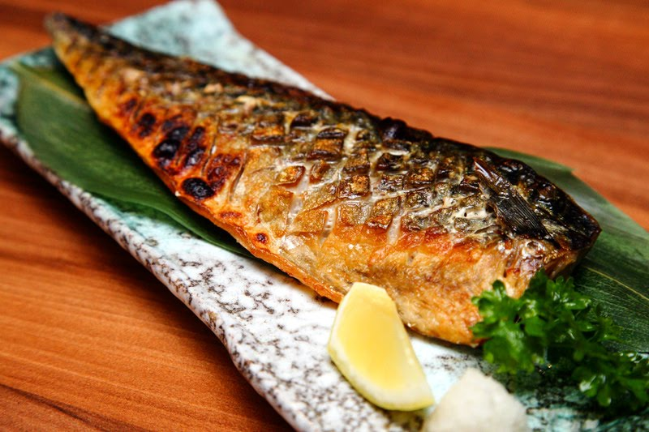

Saba Shioyaki

Background
Saba Shioyaki, also known as grilled mackerel is a seafood dish from Japan that is normally prepared
as an entree or in a bento box. Here, we'll be preparing the fish as well as a common pairing of cucumber sunomono
Ingredients
- Mackerel, Whole or Fillet
- Salt
- Sake
- Lemon
- Scallions
- Daikon Radish
- Cucumber
- Short-grain Rice
- Ponzu
- Sesame Seeds
- Water
Steps
-
Halve the cucumber lengthwise and remove the seeds with a spoon. Then slice the cucumber half into 3-4mm pieces,
resembling a crescent moon. Place slices inside of a bowl and then salt while mixing to ensure an even distribution of salt.
Cover then place inside of the fridge.
-
Prepare the short-grain rice as per the directions on the packaging.
-
Preheat oven broiler on low. If you only have one setting, set to broil and move the oven rack to its lowest point.
Prepare the whole fish and discard innards. Bones may be saved for stock. Skip this if you just have the fillets.
Rinse the fillets with the sake and then pat dry.
Generously salt the fillets and let stand for 20 minutes. Once seasoned, place them on a wire rack inside
of a sheet pan and then put them inside the oven. Skin side down. Once light brown, flip and finish the fillets by crisping up the skin.
Then remove and place on a serving plate.
-
Grate the daikon radish with an oroshi grater. Drain excess liquid. Finely slice scallions. Cut lemon into wedges.
Then set all of these aside for garnish.
-
Remove the cucumbers from the fridge, drain excess liquid and place in a bowl.
Then drizzle just enough ponzu on the cucumbers to coat.
Finish with toasted sesame seeds.
-
Serve the fish with the garnishes, the cucumber salad and rice.
Back to Home